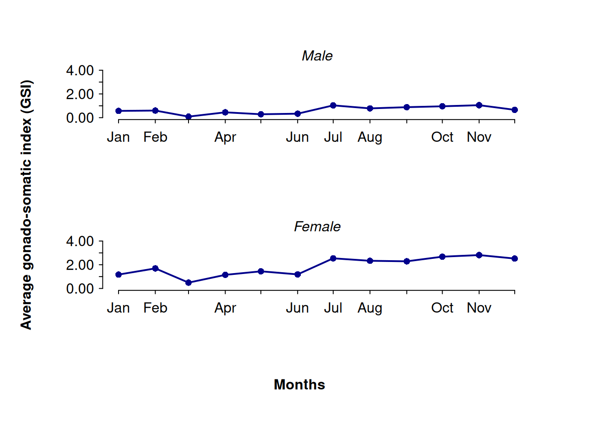

# Load the data.table package
library(data.table)
# Import the data
speciesx <- fread("reproductive-biology-data.csv")Plotting gonado-somatic index in R
Introduction
This is the third and final installment in our series on conducting a reproductive biology study of fish stocks. If you missed the earlier tutorials, you can find Part 1 here and Part 2 here. As before, we will continue working with the same dataset to explore and visualize fish gonado-somatic index.
Determining the monthly Gonado-Somatic Index (GSI) of fish plays a pivotal role in fisheries biology and management. GSI data provides fundamental insights into the reproductive cycles of fish populations, allowing researchers to discern peak spawning periods, track seasonal variations in reproductive activity, and understand the timing of maturity onset. Moreover, GSI serves as a reliable indicator of reproductive potential, with higher index values indicating increased investment in gonad development and suggesting greater spawning success and population replenishment potential.
This information is crucial for guiding fisheries management practices, enabling the establishment of appropriate fishing quotas and seasonal closures to safeguard spawning fish and maintain sustainable harvests. Scientifically, GSI analysis supports broader investigations into factors influencing reproductive success, such as environmental conditions and human impacts. Conservation efforts benefit significantly from GSI data, as it helps assess the reproductive health of fish populations and informs prioritization of conservation actions to protect aquatic ecosystems and biodiversity.
GSI analysis stands as a cornerstone in fisheries science, offering essential data for sustainable management, scientific research, and conservation initiatives.
Data processing
When conducting analyses for a reproductive biology study of fish stocks, several steps are crucial to preparing and summarizing the data effectively. Initially, the process involves selecting pertinent columns from the dataset speciesx, such as sdate (sampling date), sex (indicating male “M” or female “F”), and gsi (Gonado-Somatic Index), which quantifies reproductive readiness. Sorting this data by sdate ensures chronological order, essential for temporal analysis.
gsi <- speciesx[, list(sdate, sex, gsi)][order(sdate)]Next, aggregation by sex and sampling date is performed to compute the average GSI (aveGSI). This step uses data.table syntax to group the data by sex and sdate, calculating the mean GSI within each group. This aggregation provides insights into the average reproductive condition across different sexes over time, aiding in understanding seasonal variations and reproductive cycles within the fish population.
gsi <- gsi[, list(aveGSI = mean(gsi)), by = list(sex, sdate)]Additionally, recoding the abbreviated sex identifiers (“M” and “F”) to their complete terms (“Male” and “Female”) enhances clarity and interpretability of the data. This transformation ensures consistency in the representation of sexes throughout the analysis, facilitating straightforward interpretation of results and downstream visualizations.
gsi[list(sex = c("M", "F"), to = c("Male", "Female")), on = "sex",
sex := i.to]Having completed these preparatory steps, we are now ready to move forward with data visualization.
Data visualization
Data visualization is essential for interpreting trends and patterns in datasets. It allows us to present complex information graphically, making it easier to understand and analyze. The code below demonstrates how to create a multi-panel plot showing the average GSI per month, using base R graphics:
par(mfrow = c(2, 1), mar = c(5, 4, 2, 2), oma = c(3, 2, 2, 2),
mgp = c(2.5, 0.5, 0))
ssex <- unique(gsi$sex)
for(i in 1:length(ssex)){
x <- gsi[gsi$sex == ssex[i], ]
plot(x$aveGSI ~ x$sdate, type = "o", las = 1, pch = 16, tcl = -0.2, lwd = 2,
col = "blue4",
ann = FALSE, axes = FALSE, ylim = c(0, 4))
mtext(ssex[i], side = 3, outer = FALSE, line = 0.25, font = 3)
axis.Date(
side = 1,
at = seq(min(x$sdate), max(x$sdate), by = "1 mon"),
format = "%b",
tcl = -0.2
)
axis(
side = 2,
at = seq(0, 4, 1),
label = format(round(seq(0, 4, 1)), nsmall = 2),
las = 1,
tcl = -0.2
)
}
mtext("Average gonado-somatic index (GSI)", side = 2, adj = 0.5, font = 2,
las = 3, outer = TRUE)
mtext("Months", side = 1, adj = 0.5, font = 2, outer = TRUE, xpd = TRUE)
Breakdown and brief explanation of the code above:
This code sets up a 2x1 layout for plotting (
par(mfrow = c(2, 1)), allowing two plots stacked vertically. Parameters such as margins (mar), outer margins (oma), and axis properties (mgp) are adjusted for layout and readability.Loop through unique sexes: It iterates over unique values of sex in the
gsidataset (ssex <- unique(gsi$sex)).Plotting: For each sex, a scatter plot (
plot(x$aveGSI ~ x$sdate, type = "o", ...)) of average GSI (aveGSI) against sampling dates (sdate) is created. Options include point type (pch), line type (type), line width (lwd), and color (col).Customizing axes:
axis.Date(side = 1, ...)formats the x-axis with monthly ticks (at = seq(...)andformat = "%b"for abbreviated month names).axis(side = 2, ...)sets ticks and labels for the y-axis.
Annotation:
mtext(ssex[i], ...)labels each panel with the corresponding sex (ssex[i]).mtext("Average gonado-somatic index (GSI)", ...)andmtext("Months", ...)add overall axis labels for the entire plot.
Interpretation
The average Gonado-Somatic Index (GSI) of males and females shows synchronization, indicating similar reproductive patterns across sexes. The highest average GSI values are consistently observed from July to December for both males and females. This period likely corresponds to peak reproductive activity, characterized by increased gonadal development and readiness for spawning. This synchronized peak suggests a seasonal breeding cycle influenced by environmental factors such as temperature and photoperiod, influencing reproductive physiology in fish populations. Understanding these patterns is crucial for fisheries management and conservation efforts, ensuring sustainable exploitation of fish stocks during their most reproductive periods.